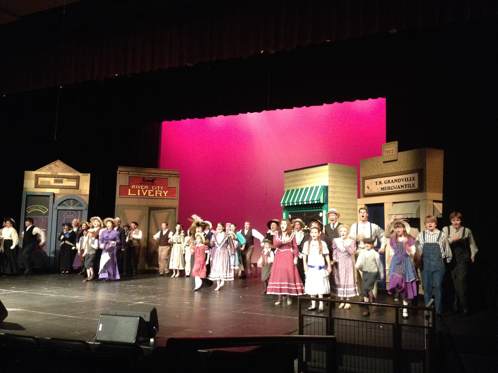
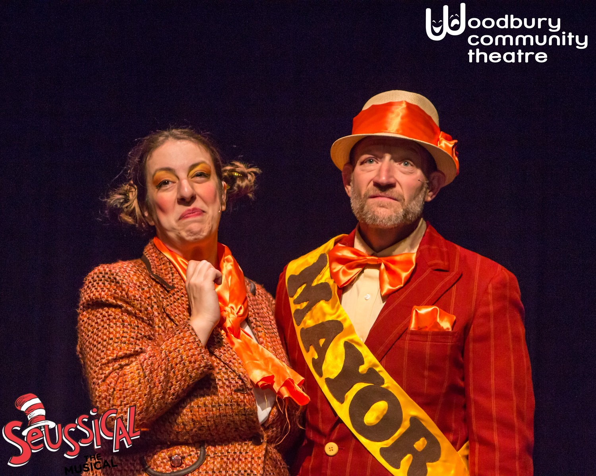
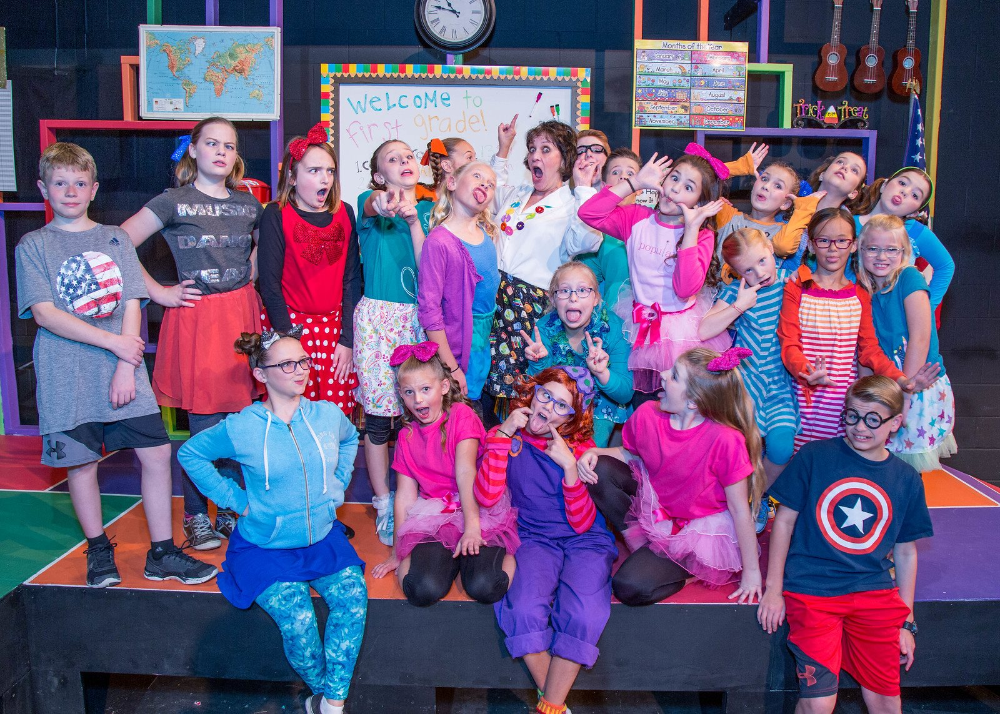

About UsForty seven years ago, the southeast metro looked very different than it does today. Corn fields sprawled where schools now stand, and the Woodbury Theater Guild produced plays in the basement of churches. Thousands of volunteer hours later, the facilities have grown to include two theaters, three rehearsal spaces, and an abundance of shop space. This year alone your involvement has made it possible for Woodbury Community Theatre to dazzle audiences with 8 high-quality full scale productions annually. The cornerstone of Woodbury Community Theatre has always been community involvement and volunteerism. We pride ourselves on not only the quality of our performances but also the teamwork, camaraderie, and fun that is generated along the way. Merrill Community Arts Center and Woodbury Community Theatre have a joint mailing list. We use our mailing list to inform you of audition opportunities, upcoming theatrical performances, orchestral performances, art shows, and other arts performances and classes that are hosted in Merrill’s facilities. Click the Join Our Mailing List Button below if you're interested. |
|  |  |  |